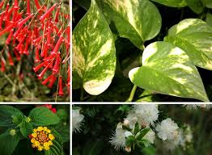
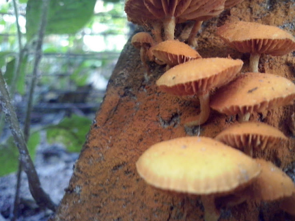

Os componentes da cadeia alimentar correspondem a toda parte viva que a compõe. Eles são classificados em produtores, consumidores e decompositores, cada um deles representa um nível trófico.
Produtores
Os produtores são os seres vivos que fabricam o seu próprio alimento através da fotossíntese, ou seja, são seres autótrofos.
Eles representam o primeiro nível trófico da cadeia alimentar e não precisam se alimentar de outros organismos.
São exemplos de produtores: Plantas e o fitoplâncton.
Consumidores
Os consumidores são os seres heterótrofos, ou seja, não produzem o seu próprio alimento e por isso necessitam buscar em outros seres a energia para sobreviver.
Eles dividem-se basicamente em:
-
Consumidores primários: Representados pelos herbívoros, alimentam-se dos seres produtores.
-
Consumidores secundários: Representados pelos carnívoros, alimentam-se dos consumidores primários.
-
Consumidores terciários: Representados pelos carnívoros de grande porte e predadores.
Decompositores
Os seres decompositores são importantes para o ciclo da cadeia alimentar,eles alimentam-se da matéria
orgânica em decomposição, a fim de obter nutrientes e energia.
Nesse processo, transformam a matéria orgânica em inorgânica, que será utilizada pelos produtores, recomeçando o ciclo.
São exemplos de decompositores: Fungos, bactérias e alguns protozoários.
